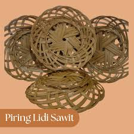

Pupuk Organik Sawit
Pupuk ramah lingkungan dari tandan kosong sawit.

Briket Biomassa
Energi alternatif dari limbah sawit.

Bio Pellet
Bahan bakar ramah lingkungan.

Kerajinan Pelepah Sawit
Produk kreatif berbasis limbah sawit.